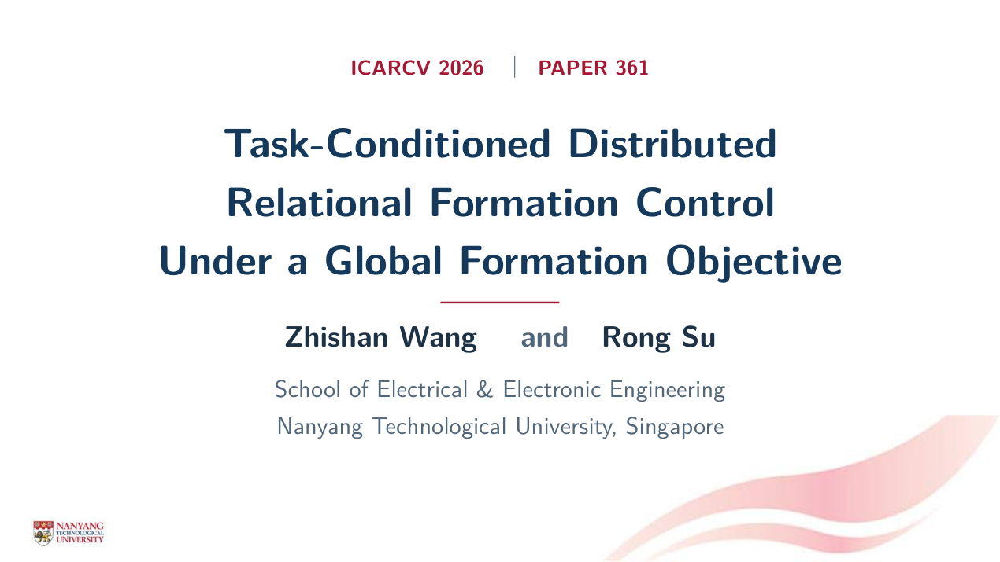

ICARCV 2026 · Oral presentation
Task-Conditioned Distributed Relational Formation Control Under a Global Formation Objective
Presented by Zhishan Wang · 16 November 2026 · Ha Long Bay, Vietnam

Slide 1 of 28 · Title and authorsZhishan Wang and Rong Su present task-conditioned distributed relational formation control under a global formation objective.